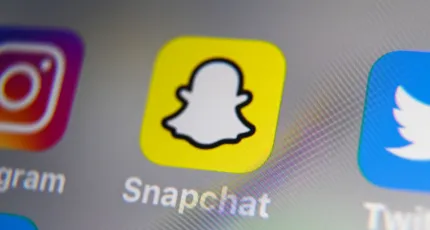
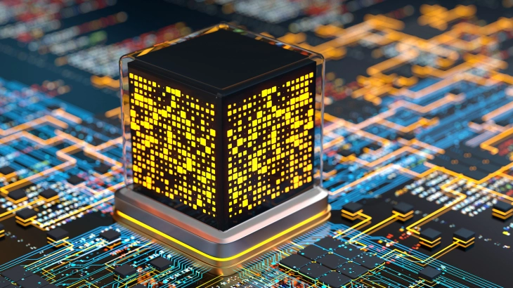

Snapchat has faced increasing criticism in recent years as the opioid crisis plays out on social media, often with tragic results. In October, an NBC investigation reported the stories of a number...
Despite all the buzz, quantum investments are still not mainstream : there were about 90 quantum investments in 2021.
